By definition 3.1 and the algorithm 3.1, the hybrid rational function, p(x)/q(x), with the accuracy level
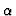
is obtained. We consider, here, the error between p(x)/q(x)and the interpolated rational function, P(x)/Q(x). The following theorem is established.
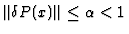
and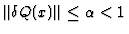
in (8). Then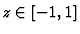
s.t.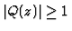
.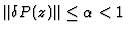
and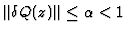
implies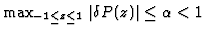
and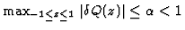
respectively. Thus, rhs of (10) is estimated by (9), for s.t. .This theorem 4.1 gives the error of HRFA and is the main result of this paper. To show how apparent the error is, we rewrite HRFA algorithm, Algorithm 2.1, as follows:
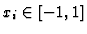
and parameter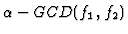
and obtain
After the computation of the procedure 1. of
the algorithm 4.1,
accuracy of numerical rational interpolation p(x)/q(x) of the data set
D is estimated by Theorem 4.1 as
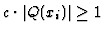
for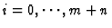
.The result (11) shows that our a posteriori error estimate is dominated by the parameter, the accuracy level, . Similar results may obtained by using other approximate-GCDs but with different accuracy level parameters.